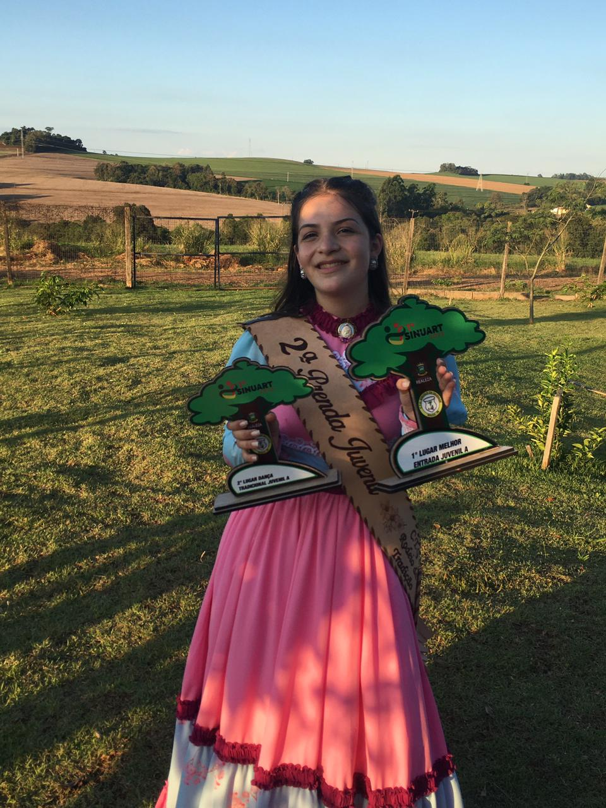

Nasceu em Cascavel PR no dia 23 de fevereiro de 2007, estuda no Colégio Estadual Wilson Joffre, e a matéria que mais gosta é biologia. Já participou 3 vezes do concurso de orátoria da escola. E adora ler livros. Sempre manteve uma média boa e foi líder de turma por 4 anos consecutivos. Tem o objetivo de se formar em veterinária e ter sua própria clínica.
